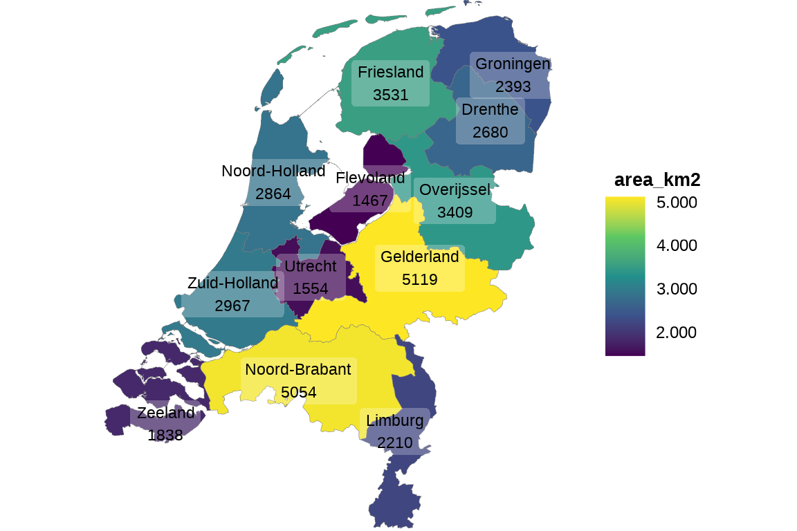

Introduction
Plotting with plot2() - Less typing, faster coding
The plot2() function is a convenient wrapper around many ggplot2 functions such as ggplot(), aes(), geom_col(), facet_wrap(), labs(), etc., and provides:
- Writing as few lines of codes as possible
- Easy plotting in three ‘directions’:
x(the regular x axis),category(replaces ‘fill’ and ‘colour’) andfacet - Automatic setting of these ‘directions’ based on the input data
- Setting in-place calculations for all plotting direction and even
y - Easy way for sorting data in many ways (such as on alphabet, numeric value, frequency, original data order), by setting a single argument for the ‘direction’:
x.sort,category.sortandfacet.sort - Easy limiting values, e.g. by setting
x.max_items = 5orcategory.max_items = 5 - Markdown support for any label, with any theme
- Integrated support for any Google Font and any installed system font
- An extra clean, minimalistic theme with a lot of whitespace (but without unnecessary margins) that is ideal for printing:
theme_minimal2() - Some conveniences from Microsoft Excel:
- The y axis starts at 0 if possible
- The y scale expands at the top to be better able to interpret all data points
- Date breaks can be written in a human-readable format (such as “d mmm yyyy”)
- Labels with data values can easily be printed and are automatically determined
- Support for any
ggplot2extension based onggplot2::fortify()
The ggplot2 package in conjunction with the dplyr, forcats and cleaner packages can provide above functionalities, but the goal of the plot2() function is to generalise this into one function. The default plot2() function currently has 123 arguments, all with a default value. Every plot2 is just a ggplot object, and thus extendible and editable with any other ggplot2 function, using + (per the ggplot2 convention`).
Adding layers atop of other layers using functions (i.e., how ggplot2 works) is conceptually pure brilliance. But the costs are at the user’s side: it lacks convenience as it requires a lot of recurrent code. Who wants to type ggplot(), aes() and geom_whatever() and their arguments over and over again, and then add another bunch of functions to get the desired style? The plot2() function is arguably what ggplot2::qplot() could have been.
Initialisation
To start, load the package:
The ggplot2 package must (of course) be installed, but it does not need to be loaded using library(). The same goes for other tidyverse packages, such as dplyr, forcats and stringr. They are only used internally and not required to load before using the plot2() function. The pipe function (%>%) is also being exported by this package, so it can be used by only loading this package.
Setting plot type / geom
plot2() was designed to help you with creating plots by doing non-intrusive suggestions, much to the contrary of ggplot2, where every detail has to be defined manually.
To start with, the plot type will be determined automatically if left blank. For example, it will be numeric if both the x and y axes are numeric:
data.frame(x = c(1:10),
y = c(11:20)) %>%
plot2()
#> i Using x = x
#> i Using y = y
#> i Using type = "point" since both axes are numeric
If the x axis is of class factor or character, the type will be column:
data.frame(x = letters[1:10],
y = c(11:20)) %>%
plot2()
#> i Using y = y
#> i Using x = x
#> i Using type = "col" as the default
Notice how the y axis starts at y = 0 and all columns have datalabels (since the default value for the datalabels argument is TRUE for a discrete x axis) that do not interfere with plot lines.
If the y axis is absent and the x axis is numeric, the default will be a histogram:
# rnorm() here generates a thousand random values according to a normal distribution
data.frame(x = rnorm(1000, mean = 10)) %>%
plot2()
#> i Using x = x
#> i Assuming type = "histogram" since the data has only one numeric variable and no other variables
#> i Using binwidth = 0.3 based on data
#> i Assuming smooth = TRUE for type = "histogram"
If there are multiple y values for each x, the default will be a boxplot:
data.frame(x = c("a", "a", "a", "a",
"b", "b", "b", "b",
"c", "c", "c", "c"),
y = rnorm(12, mean = 10)) %>%
plot2()
#> i Using y = y
#> i Using x = x
#> i Using type = "boxplot" since all groups have size >= 3
The type arguments accepts any (abbreviation of) ggplot2 geoms:
data.frame(x = c("a", "a", "a", "a",
"b", "b", "b", "b",
"c", "c", "c", "c"),
y = rnorm(12, mean = 10)) %>%
plot2(type = "violin") # can also be "v" or "geom_violin"
#> i Using y = y
#> i Using x = x
data.frame(x = c("a", "a", "a", "a",
"b", "b", "b", "b",
"c", "c", "c", "c"),
y = rnorm(12, mean = 10)) %>%
plot2(type = "j") # abbreviation of "jitter"
#> i Using y = y
#> i Using x = x
Setting the 3 plotting directions
plot2() comes with three different plotting directions: x, category and facet. The x direction plots along the x axis, the category plots using the legend (and replaces ggplot2’s colour and fill), and the facet direction plots using facets.
In ggplot2, everything set in aes() will in fact become such a direction. plot2() provides no support for plotting categorically using e.g., shape, linetype or size.
Tidy evaluation
All plotting directions in plot2() support tidy evaluation. This means that pretty much any input can be given, and plot2() (or actually, the rlang package) handles everything for you:
# |------> this is x
# | |-> this is y
mtcars %>% plot2(mpg, hp)
#> i Using type = "point" since both axes are numeric
Tidy evaluation allows for in-place transformations as well:
my_y_values <- mtcars$hp ^ 3
mtcars %>%
plot2(x = mpg ^ 2,
y = my_y_values)
#> i Using type = "point" since both axes are numeric
#> i Assuming y.scientific = TRUE
The x direction
The x axis is the most commonly used way to categorise values of y according to another variable. All arguments of plot2() that start with x. are for adjusting settings of the x axis. These are: ‘x.breaks’, ‘x.character’, ‘x.date_breaks’, ‘x.date_labels’, ‘x.drop’, ‘x.expand’, ‘x.lbl_align’, ‘x.lbl_angle’, ‘x.lbl_italic’, ‘x.limits’, ‘x.max_items’, ‘x.max_txt’, ‘x.n_breaks’, ‘x.position’, ‘x.remove’, ‘x.sort’, ‘x.title’, ‘x.trans’.
x labels
Many of these arguments are determined based on the input data. For example, x.date_breaks and x.date_labels are automatically determined if they are left blank:
library(cleaner) # 'cleaner' has a rdate() function for random dates
data.frame(x = rdate(100, min = "2016-01-01", max = "2021-12-31"),
y = rnorm(100, mean = 10)) %>%
plot2(type = "p")
#> i Using y = y
#> i Using x = x
#> i Using x.date_breaks = "1 year" based on data
#> i Using x.date_labels = "mmm yyyy" based on data
data.frame(x = rdate(100, min = "2021-06-01", max = "2021-12-31"),
y = rnorm(100, mean = 10)) %>%
plot2(type = "p")
#> i Using y = y
#> i Using x = x
#> i Using x.date_breaks = "1 month" based on data
#> i Using x.date_labels = "mmmm yyyy" based on data
data.frame(x = rdate(100, min = "2021-12-01", max = "2021-12-31"),
y = rnorm(100, mean = 10)) %>%
plot2(type = "p")
#> i Using y = y
#> i Using x = x
#> i Using x.date_breaks = "4 days" based on data
#> i Using x.date_labels = "d mmm" based on data
If you have crowded x labels, it’s easy to turn them:
data.frame(x = rdate(100, min = "2021-12-01", max = "2021-12-31"),
y = rnorm(100, mean = 10)) %>%
plot2(x.date_breaks = "1 day",
x.date_labels = "ddd d mmm yyyy",
type = "p",
title = "Change this...")
#> i Using y = y
#> i Using x = x
data.frame(x = rdate(100, min = "2021-12-01", max = "2021-12-31"),
y = rnorm(100, mean = 10)) %>%
plot2(x.date_breaks = "1 day",
x.date_labels = "ddd d mmm yyyy",
x.lbl_angle = 90, # <- only requires this argument
type = "p",
title = "... into this:")
#> i Using y = y
#> i Using x = x
These arguments automatically pop up if you press tab after typing plot2(x.):

This means that users no longer need to memorise many ggplot2 functions and their arguments to actually make one tiny adjustment. So, this ‘library’ with all settings and options is constantly available for all who code, lowering the bar for beginners as well.
The category direction
The category plotting direction replaces colour and fill, which were in our opinion very poorly worded (isn’t fill in the plot a colour as well?). plot2() automatically determines the colour and fill based on the input data.
category scales
The scale for the category is also something that can be determined automatically quite easily - it is after all based on the input data and input choices. plot2() determines the type of scale automatically:
character_z <- data.frame(x = rep(letters[1:5], 10),
y = rnorm(50, 5),
# these are 5 letters:
z = rep(letters[6:10], 10),
stringsAsFactors = FALSE)
head(character_z)
#> x y z
#> 1 a 5.642363 f
#> 2 b 4.524717 g
#> 3 c 3.887239 h
#> 4 d 4.355383 i
#> 5 e 5.306527 j
#> 6 a 4.718409 f
numeric_z <- data.frame(x = rep(letters[1:5], 10),
y = rnorm(50, 5),
# these are 5 numbers:
z = rnorm(50, 5),
stringsAsFactors = FALSE)
head(numeric_z)
#> x y z
#> 1 a 6.179875 6.048082
#> 2 b 2.344461 2.847991
#> 3 c 5.364568 5.925135
#> 4 d 7.144653 3.056612
#> 5 e 3.576959 5.167018
#> 6 a 6.457406 3.974431
character_z %>%
plot2(x, y, z, type = "jitter",
caption = "*category* is non-numeric based on inputdata.")
numeric_z %>%
plot2(x, y, z, type = "jitter",
caption = "*category* is numeric based on inputdata.")
Settings to this scale can be set with arguments such as category.labels, category.breaks, category.limits, category.expand and category.trans.
For continuous scales, plot2() has an additional argument: category.midpoint. When using a 3-point colour scale, this the value of y that should have the middle colour, it defaults to the median of y:
numeric_z %>%
plot2(x, y, z,
type = "jitter",
colour = c("red", "green", "blue"))
#> i Using category.midpoint = 4.94 (the current category scale centre)
numeric_z %>%
plot2(x, y, z,
type = "jitter",
colour = c("red", "green", "blue"),
category.midpoint = 2.5,
category.title = "*New* midpoint!")
The facet direction
The facet plotting direction splits the plot into multiple plots. Several settings are available: ‘facet.bold’, ‘facet.drop’, ‘facet.fill’, ‘facet.fixed_y’, ‘facet.italic’, ‘facet.margin’, ‘facet.max_items’, ‘facet.max_txt’, ‘facet.nrow’, ‘facet.position’, ‘facet.relative’, ‘facet.repeat_lbls_x’, ‘facet.repeat_lbls_y’, ‘facet.size’, ‘facet.sort’.
For controlling the y axis, facet.repeat_lbls_y (defaults to FALSE) makes sure that all plots have the same y axis (also notice that the y argument is set to the number of rows with n()):
admitted_patients
#> # A tibble: 250 × 6
#> date gender age age_group hospital ward
#> <date> <chr> <dbl> <ord> <fct> <chr>
#> 1 2002-02-18 M 82 75+ B Non-ICU
#> 2 2002-02-21 M 64 55-74 D Non-ICU
#> 3 2002-02-24 M 0 0-11 C Non-ICU
#> 4 2002-04-14 M 73 55-74 C Non-ICU
#> 5 2002-04-14 M 72 55-74 C Non-ICU
#> 6 2002-04-26 M 79 75+ D Non-ICU
#> 7 2002-05-04 F 46 25-54 B ICU
#> 8 2002-07-15 M 84 75+ A ICU
#> 9 2002-07-15 F 67 55-74 B ICU
#> 10 2002-08-31 F 80 75+ B ICU
#> # … with 240 more rows
admitted_patients %>%
plot2(x = age_group, y = n(), facet = hospital,
caption = "Same y axes")
#> i Using type = "col" as the default
admitted_patients %>%
plot2(x = age_group, y = n(), facet = hospital,
facet.repeat_lbls_y = TRUE,
caption = "All y axes on their own")
#> i Using type = "col" as the default
You can omit repeated x labels as well:
admitted_patients %>%
plot2(x = age_group, y = n(), facet = hospital,
facet.repeat_lbls_x = FALSE)
#> i Using type = "col" as the default
Or change the number of rows the facet should be in:
admitted_patients %>%
plot2(x = age_group, y = n(), facet = hospital,
facet.nrow = 1)
#> i Using type = "col" as the default
No need to memorise how again the scales, shrink and switch arguments of the facet_wrap() function work!
Setting multiple columns
For all plotting directions (x, category and facet), you can use multiple variables as input, for example using c():
admitted_patients %>%
plot2(x = age_group,
y = n(),
facet = c(gender, ward))
#> i Using type = "col" as the default
You can even use Tidyverse selectors:
library(dplyr)
admitted_patients %>%
plot2(x = age_group,
y = n(),
facet = where(is.character),
sep = " -- ")
#> i Using facet = c(gender, ward)
#> i Using type = "col" as the default
Sorting
plot2() has a powerful sorting option for all three plotting directions: x.sort, category.sort and facet.sort.
Applying one of the sorting methods will transform the values to an ordered factor, which will be used to orient the data. Valid options are:
-
TRUE: sort as"asc" -
FALSE: sort according to the order in the data -
NULL: do not sort/transform at all -
"asc"or"alpha": sortfactors on their levels, otherwise sort ascending on alphabet, while maintaining numbers in the text (numeric sort) -
"desc": sortfactors on their reversed levels, otherwise sort descending on alphabet, while maintaining numbers in the text (numeric sort) -
"order"or"inorder": sort asFALSE -
"freq"or"freq-desc": sort descending according to the frequencies ofycomputed bysummarise_function(highest value first) -
"freq-asc": sort ascending according to the frequencies ofycomputed bysummarise_function(lowest value first)
The default for all plotting directions is TRUE, except for continuous values on the x axis (such as dates and numbers).
admitted_patients %>%
plot2(hospital, y = n(), age_group,
y.title = "count",
stacked = TRUE,
caption = "No sorting")
#> i Using type = "col" as the default
admitted_patients %>%
plot2(hospital, y = n(), age_group,
y.title = "count",
stacked = TRUE,
x.sort = "freq-asc",
category.sort = "desc",
caption = paste("Hospitals (*x*) now sorted on frequencies (low to high),",
"Age groups (*category*) now sorted on alphabet (desc)",
sep = "\n"))
#> i Applying x.sort = "freq-asc" using summarise_function = base::sum
#> i Using type = "col" as the default
The sorting can be used in combination with setting a maximum number of items to plot per plotting direction.
Setting a maximum number of items
plot2() has a an option to limit data values for all three plotting directions: x.max_items, category.max_items and facet.max_items. They take a numeric values as input:

admitted_patients %>%
plot2(hospital, y = n(),
x.max_items = 3)
#> i Using type = "col" as the default
This can be combined with sorting:
admitted_patients %>%
plot2(hospital, y = n(),
x.sort = "freq-desc",
x.max_items = 3,
x.max_txt = "%n other hospitals (%p)")
#> i Applying x.sort = "freq-desc" using summarise_function = base::sum
#> i Using type = "col" as the default
Setting the values of y
In ggplot2, the values for y must be numeric. In plot2(), you can also use an in-place calculation of a (non-numeric) variable. The input will be evaluated while taking into account all plotting directions, such as x and category:
admitted_patients
#> # A tibble: 250 × 6
#> date gender age age_group hospital ward
#> <date> <chr> <dbl> <ord> <fct> <chr>
#> 1 2002-02-18 M 82 75+ B Non-ICU
#> 2 2002-02-21 M 64 55-74 D Non-ICU
#> 3 2002-02-24 M 0 0-11 C Non-ICU
#> 4 2002-04-14 M 73 55-74 C Non-ICU
#> 5 2002-04-14 M 72 55-74 C Non-ICU
#> 6 2002-04-26 M 79 75+ D Non-ICU
#> 7 2002-05-04 F 46 25-54 B ICU
#> 8 2002-07-15 M 84 75+ A ICU
#> 9 2002-07-15 F 67 55-74 B ICU
#> 10 2002-08-31 F 80 75+ B ICU
#> # … with 240 more rows
admitted_patients %>%
plot2(x = hospital,
y = n_distinct(age_group),
category = ward,
title = "Unique available age groups per hospital")
#> i Using type = "col" as the default
Since the plotting directions allow for in-place transformations as well, you can plot your data without the need to use group_by(), count() or summarise() yourself:
admitted_patients %>%
plot2(x = format(date, "%Y"),
y = median(age),
y.age = TRUE,
category = ward,
datalabels = FALSE)
#> i Using type = "col" as the default
Including all transformations, we used in total 3 functions (plot2(), format(), median()) - the very least. Compare that to the required dplyr + ggplot2 code:
library(ggplot2)
admitted_patients %>%
group_by(format(date, "%Y"), ward) %>%
summarise(median(age)) %>%
ggplot(aes(x = `format(date, "%Y")`,
y = `median(age)`,
fill = ward)) +
geom_col(position = "dodge",
width = 0.5) +
# this part is just for styling:
scale_fill_manual(values = c("ICU" = "#01617E",
"Non-ICU" = "#8B9934"),
name = "") +
scale_y_continuous(expand = expansion(mult = c(NA, 0.25)),
breaks = seq(0, 100, 10),
labels = function(x) paste(x, "yrs")) +
theme_minimal2(legend.position = "top")
#> `summarise()` has grouped output by 'format(date, "%Y")'. You can override
#> using the `.groups` argument.
Now, we had to use 7 functions to get the desired functional part of the plot while defining all variables twice. The styling part took another 6 functions. Aside from being it a lot of redundant code, using all of these functions requires users to know them and their arguments. How many users would know expansion(), or that colours can be named in scale_fill_manual()? The obligations on the user side are quite insane.
And why is 2009 still so wide?? I’ll give you this: if you know the solution, you’re way deeper into ggplot2 than should ever be necessary for an R package.
Support for any font, including Google Fonts
Any installed font and any Google Font is support in plot2, since it uses the showtext package internally. Missing fontss will be downloaded automatically:

Plotting geometries (sf objects)
Objects of class sf (simple feature) are treated specially by the ggplot2 package, although plot2() handles these objects like any other data set. Instead it returns a ggplot object created with geom_sf() internally, but most arguments are usable and even the theme_minimal2() theme has good use for sf plots.
The netherlands data set is such an sf object:
library(sf)
#> Linking to GEOS 3.8.0, GDAL 3.0.4, PROJ 6.3.1; sf_use_s2() is TRUE
print(netherlands)
#> Simple feature collection with 12 features and 2 fields
#> Geometry type: MULTIPOLYGON
#> Dimension: XY
#> Bounding box: xmin: 3.358378 ymin: 50.75037 xmax: 7.227498 ymax: 53.55523
#> Geodetic CRS: WGS 84
#> First 10 features:
#> province area_km2 geometry
#> 1 Groningen 2393.481 MULTIPOLYGON (((6.778757 53...
#> 2 Friesland 3531.061 MULTIPOLYGON (((6.176871 53...
#> 3 Drenthe 2680.343 MULTIPOLYGON (((6.493505 53...
#> 4 Overijssel 3408.845 MULTIPOLYGON (((6.136821 52...
#> 5 Flevoland 1466.553 MULTIPOLYGON (((5.748807 52...
#> 6 Gelderland 5118.927 MULTIPOLYGON (((5.876205 52...
#> 7 Utrecht 1553.996 MULTIPOLYGON (((5.021543 52...
#> 8 Noord-Holland 2864.292 MULTIPOLYGON (((5.054713 52...
#> 9 Zuid-Holland 2967.352 MULTIPOLYGON (((4.547322 52...
#> 10 Zeeland 1838.376 MULTIPOLYGON (((3.842477 51...These objects can be given to plot2(), and its built-in theme_minimal2() makes sure you get a clean map:
plot2(netherlands)
#> i Using category = area_km2
#> i Using datalabels = province
plot2(netherlands,
colour_fill = "certe",
datalabels = FALSE)
#> i Using category = area_km2
plot2(netherlands,
colour_fill = "viridis",
# datalabels support tidy evaluation too:
datalabels = paste0(province, "\n", round(area_km2)))
#> i Using category = area_km2